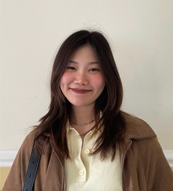

Kanyapat's Resume

Kanyapat Jitphanusophon (Yaaz)
Summary
I'm a highly motivated and detail-oriented individual with a strong background in computer science and software development. I have experience in various programming languages and frameworks, and I'm passionate about creating innovative solutions to complex problems.
Education
- Bachelor of Arts in Communication Design,
Mahidol University International College, 2018-2023
- Master of Science in Interactive Digital Media,
Trinity College Dublin, 2026 - Present
Work Experience
- Cluster Junior Graphic Designer, 2025-2026
Bangkok Marriott Marquis Queen's Park
- Graphic Designer, 2023-2025
Khao Lak Marriott Beach Resort & Spa
Skills
- Adobe Creative Suite
- UI/UX Design
- Web Development (HTML, CSS, JavaScript)
- Project Management
- Microsoft Office Suite
Contact Me